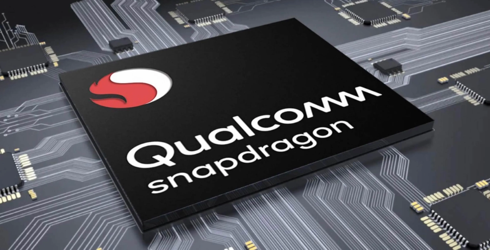
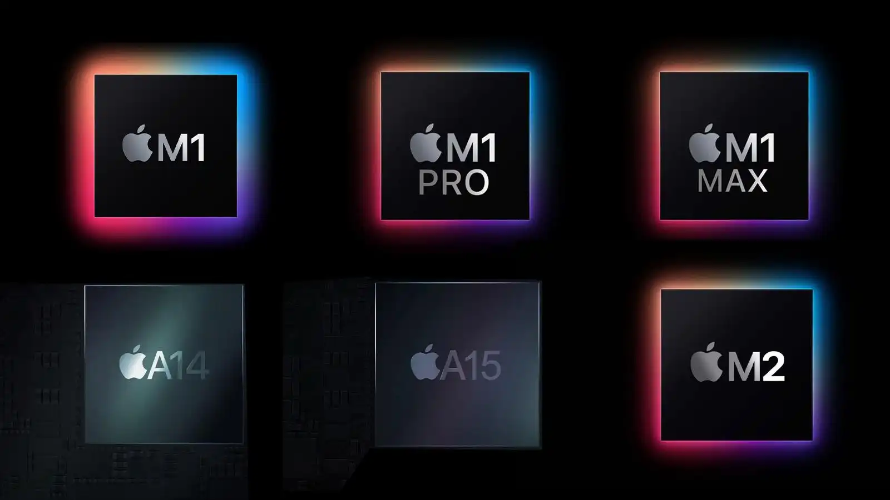
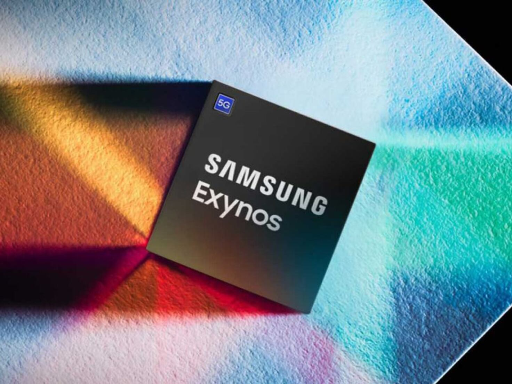
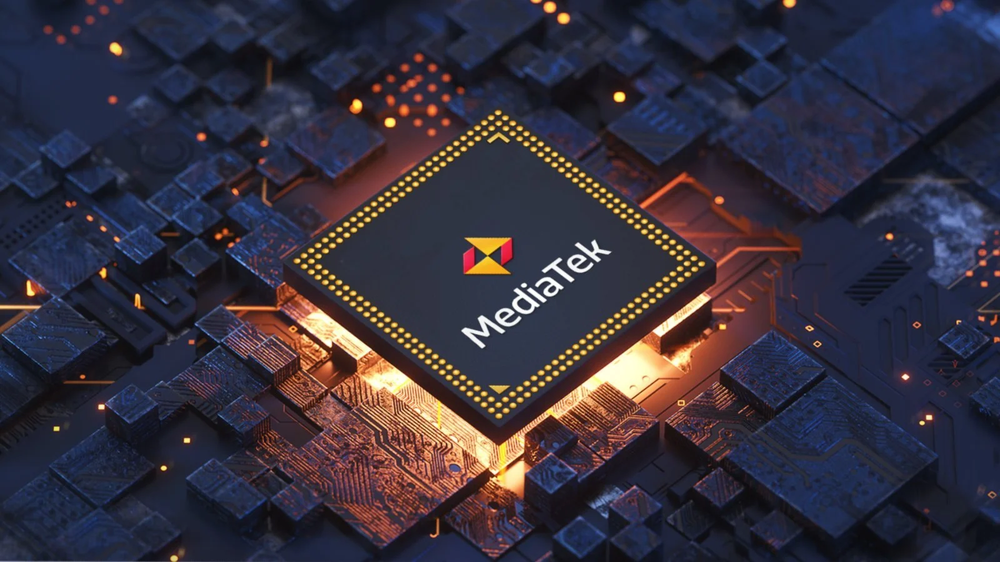
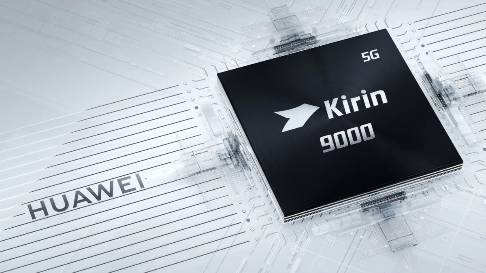

Componentes Principales
- Procesador (CPU):El procesador de un teléfono celular, también conocido como CPU (Unidad Central de Procesamiento),
es uno de los componentes más cruciales y determina gran parte del rendimiento del dispositivo. A continuación, te detallo varios aspectos importantes sobre los procesadores de celulares:
Función del Procesador:
El procesador es el cerebro del teléfono. Se encarga de ejecutar instrucciones y procesar datos para realizar tareas. Desde abrir aplicaciones hasta ejecutar juegos, reproducir videos y manejar la interfaz de usuario, todo pasa por el procesador .
Cores (Núcleos): Los procesadores modernos suelen tener múltiples núcleos, como quad-core (4 núcleos), hexa-core (6 núcleos), octa-core (8 núcleos) o incluso más. Más núcleos permiten que el procesador maneje múltiples tareas simultáneamente (multitarea) de manera más eficiente.
GPU (Unidad de Procesamiento Gráfico):La mayoría de los procesadores de teléfonos incluyen una GPU integrada para manejar gráficos y tareas de procesamiento visual. Esto es crucial para juegos y reproducción de videos de alta calidad.
NPU (Unidad de Procesamiento Neural):Procesadores avanzados tienen una NPU dedicada para tareas de inteligencia artificial y aprendizaje automático, como reconocimiento facial, procesamiento de imágenes y más.
- El tamaño del proceso de fabricación (medido en nanómetros, nm) es un factor importante. Procesos más pequeños, como 7nm, 5nm o 3nm, permiten que los procesadores sean más eficientes energéticamente y tengan mayor rendimiento. asimismo el procesador de un teléfono móvil es parte de un SoC (System on a Chip), que integra CPU, GPU, módems para conectividad celular, Wi-Fi, Bluetooth, y otros componentes en un solo chip, optimizando espacio y eficiencia. El rendimiento del procesador se refleja en la fluidez con que maneja tareas diarias, aplicaciones, juegos, multitarea y duración de la batería. Innovaciones recientes incluyen el uso de IA para optimizar el rendimiento, el procesamiento de imágenes y la eficiencia energética, así como la mejora de la conectividad 5G para velocidades de datos más rápidas y mejor rendimiento de red.
Fabricantes principales:
1. Qualcomm Snapdragon: Uno de los más populares, conocido por su alto rendimiento y eficiencia. 
2. Apple A-Series: Utilizados en los iPhones, son conocidos por su rendimiento superior y optimización con el sistema operativo iOS. 
3. Samsung Exynos: Utilizados en muchos dispositivos Samsung, conocidos por su rendimiento y capacidades multimedia. 
4. MediaTek: Ofrece procesadores competitivos en términos de costo y rendimiento, ampliamente utilizados en dispositivos de gama media y baja. 
5. HiSilicon Kirin: Fabricados por Huawei, conocidos por su buen equilibrio entre rendimiento y eficiencia energética. 